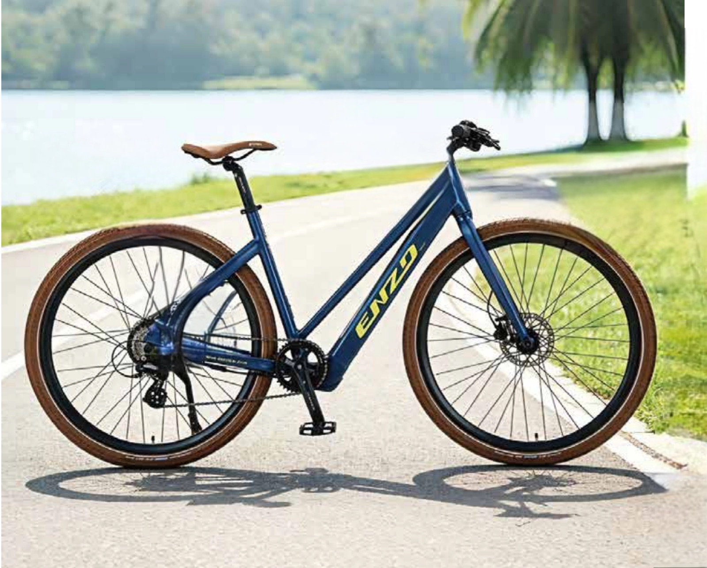

Support, clearly explained.
From regional e-bike law to battery longevity — everything you need to keep a ZEBIKE running safely and legally, wherever you ride.
What makes a ZEBIKE a ZEBIKE.
High-rigidity non-folding frames, sealed wiring, torque sensing and region-specific charging hardware. Nothing decorative, everything serviceable.
Delivery feels natural because the motor responds to how hard you pedal, not just cadence.
Water-resistant connectors and internal cable routing protect the electrical system from rain and spray.
A fused charger matched to your market — UK, EU, US or AU plug — is included with every bike. No adapter required.

E-bike law, by market.
ZEBIKE bikes are configured to the e-bike regulations of their destination market. The limits below cover the most common frameworks — always confirm the current local rule before riding.
UK EAPC
250W continuous motor, assist cut-off at 15.5 mph (25 km/h), pedal-assist only. No vehicle tax, insurance, driving licence or MOT when within limits. Rider age 14+.
EU EN15194
250W continuous rated power, assist cut-off at 25 km/h, pedal-assist only. EPAC classification accepted across EU member states; national type rules may apply to faster models.
US & Canada
Class 1 pedal-assist up to 20 mph (32 km/h) with 750W maximum. State and provincial rules vary — confirm local motor and speed limits before riding on paths.
GCC & ANZ
Configured to local power and speed limits (commonly 250W / 25 km/h). Check with the regional partner desk for market-specific homologation and documentation.
Get the miles you were promised.
Lower assistance dramatically extends range on flat urban routes.
Check pressure weekly — soft tyres waste battery on every mile.
Avoid charging a cold battery immediately after a winter ride.
For long gaps, store the pack partly charged and check it monthly.

From cart to first ride.
Regional delivery
Bikes ship 85% assembled in reinforced cartons with tools and documentation, routed via the nearest partner hub.
Final assembly
Fit the front wheel, handlebar, pedals and lights, then check brakes before the first ride.
Bed-in check
Re-check fasteners and brake adjustment after the first few rides.
Two years of cover.
The ZEBIKE commercial warranty covers the frame, motor, battery and controller. Trade orders include a 3% free-of-charge spare-parts allocation to keep dealers supplied with fast-moving items.
Quick answers.
Talk to the ZEBIKE team.
This concept site does not yet route enquiries. Connect a mailbox or CRM before launch.
Trade enquiry form